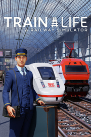

Train Life
Detalles
|  | |
| Tiempo de juego | No Jugado |
| Última actividad | Nunca |
| Añadido | 11/13/2024 0:35:38 |
| Modificado | 11/13/2024 1:10:06 |
| Estado de finalización | No Jugado |
| Librería | Playnite |
| Fuente | PORCHE |
| Plataforma | PC (Windows) |
| Fecha de lanzamiento | |
| Puntuación de la Comunidad | 63 |
| Puntuación de la Crítica | |
| Puntuación de usuario | |
| Género | Simuladores |
| Desarrollador | Simteract |
| Editor | Nacon |
| Característica | Compat. Parcial Con Mando Logros De Préstamo Familiar Un Jugador |
| Enlaces | Punto de encuentro Discusiones Guías Noticias Página de la tienda PCGamingWiki Logros |
| Tag | Acceso anticipado Ambientales Ambiente Casuales Conducción Economía Estrategia Gestión Inmersivo Mundo abierto Para mando Para toda la familia Realistas Relajantes Simulación Simulador de trabajo Simulador inmersivo Transportes Trenes Un jugador |
Descripción

Por primera vez en un simulador de ferrocarriles, ¡tú eres el maquinista y el director de la compañía!
PONTE A LOS MANDOS DE TU TREN Y VIAJA POR EUROPA

Transporta pasajeros o mercancías por 10 países y explora el campo, las ciudades, los bosques y las montañas de Europa desde tu cabina. Cada locomotora tiene sus propias características (potencia, frenada, etc.), que tendrás que aprender para controlarlas con pericia, siempre siguiendo las señales ferroviarias y adaptándote a las condiciones meteorológicas.
CONVIÉRTETE EN UN AUTÉNTICO EMPRENDEDOR DEL FERROCARRIL

Además de conducir trenes, tendrás que dirigir una compañía de éxito. Crea tu propia compañía; compra y mantén tus trenes; contrata maquinistas y dales nuevos contratos; explora nuevas rutas; y optimiza tus actividades de pasajeros y carga. ¡Toma las decisiones correctas para ganar dinero y desarrollar tu negocio!
CARACTERÍSTICAS CLAVE

- Conduce trenes emblemáticos reproducidos con toda fidelidad, como el ICE 3, el ICE 4 y el NEWAG Griffin
- Crea y personaliza tus propios trenes, desde su aspecto externo hasta el interior de la cabina
- Gestiona tu compañía: contrata maquinistas, elige contratos, construye tu red, mantén tus locomotoras para evitar averías y reparaciones de emergencia
- Viaja por 10 000 kilómetros de vías a través de las ciudades y el campo de Europa Oriental, Europa Occidental y la región de los Alpes
- Visita una amplia selección de estaciones realistas, como la Estación Central de Berlín y la Estación Central de Zúrich
- Sigue la señalización ferroviaria mientras te adaptas a los cambios de agujas y gestionas la velocidad, los cambios de vía, las distancias de frenado, las llegadas a las estaciones y la apertura y cierre de puertas
- Enfréntate a situaciones inesperadas, como un árbol en la vía, acumulaciones de nieve en el trazado o la presencia de otro tren en tu recorrido
- Adapta tu conducción a las condiciones meteorológicas y al momento del día para prevenir accidentes, día y noche, ¡con lluvias torrenciales y tormentas de nieve!